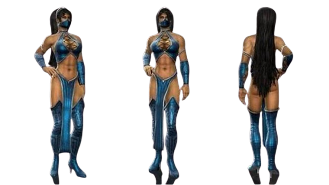
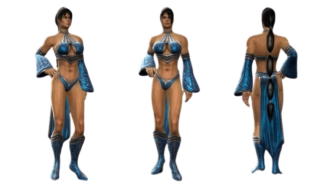

Kitana
The character Kitana is part of Mortal Kombat game universe, she was introduced in Mortal Kombat II, released in 1993. Kitana is 10.000 years old, she is a royal member, princess of Edenia. Her principal characteristics of fight is Fan War and Knives.
Biography
At the first moment, Kitana is described as the daughter of the Outworld emperor, Shao Kahn, when the truth comes to light, Shao Kahn killed her father, stealing the kingdom of Edenia. Kitana discovers the reality about her sister, Mileena, a clone of her made by Shao Kahn. At end of game, Kitana kill Shao Kahn and with the help of Jade, her best friend, and Mileena, she protect others kingdoms.
Kitana's costume in Mortal Kombat 9
 